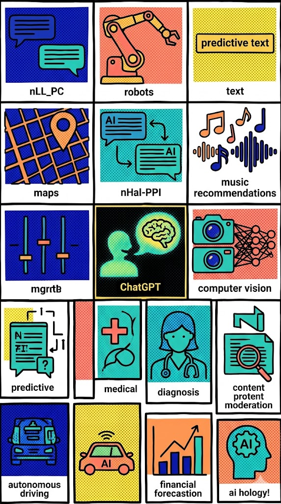
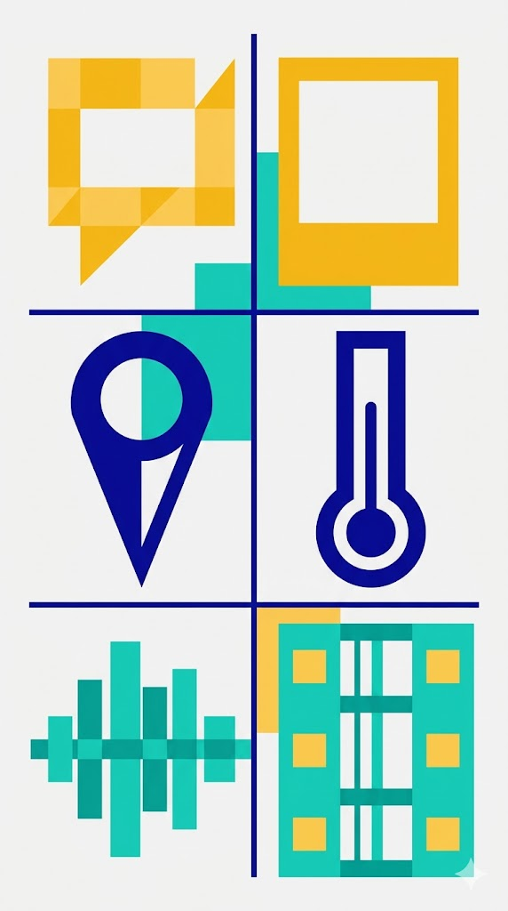
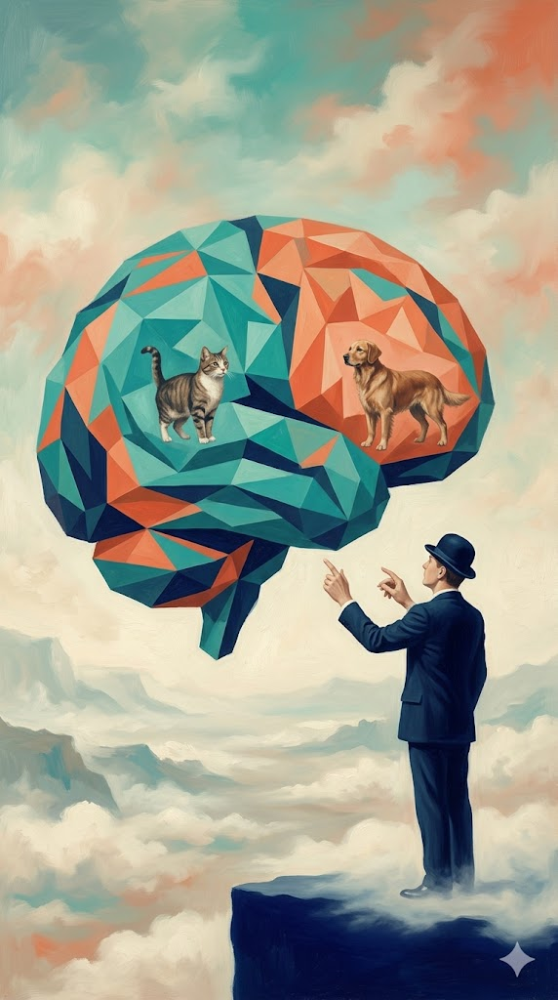

Hvernig gervigreind og gagnavísindi hjálpa okkur að skilja heiminn
Farðu inn áður en við byrjum
www.menti.com
3628 3395
Gervigreind er meira en ChatGPT
Margir setja samasemmerki á milli spunagreindar og gervigreindar.
Það er svipað og að halda að internetið sé bara TikTok.

Rauði þráðurinn
Allt byrjar á gögnum — og endar í betri ákvörðunum.
Eftir tímann eigið þið að geta…
1
Útskýrt hvað gögn eru.
2
Lýst hvað gagnavísindi eru.
3
Skilið muninn á gagnavísindum og gervigreind.
4
Útskýrt í grófum dráttum hvernig ChatGPT virkar.
5
Skilið að spunagreind er aðeins ein tegund gervigreindar.
6
Spurt gagnrýninna spurninga um svör frá gervigreind.
Hvað eru gögn?
Gögn eru upplýsingar.
Í hvert skipti sem við gerum eitthvað í rafrænum heimi verða til gögn.
Smellum
Hvaða hnapp var ýtt á?
Skrifum
Hvaða orð voru slegin inn?
Horfum
Hversu lengi var horft?
Hlustum
Hvaða lag var spilað?
Hreyfum okkur
Hvar er síminn?
Mælum
Hiti, hraði, tími, fjöldi.
Gögn geta verið margt
Gögn eru ekki bara tölur í Excel.
Texti
Skilaboð, greinar, bækur
Myndir
Ljósmyndir, teikningar
Staðsetningar
GPS hnit, kort
Mælingar
Hitastig, hraði, þyngd
Hljóð
Tónlist, tal, hljóðbylgjur
Myndbönd
Klippur, streymi, kvikmyndir

Hvað eru gagnavísindi?
Gagnavísindamenn nota stærðfræði, tölfræði og tölvufræði til að breyta hráum gögnum í gagnlegar upplýsingar.
Gagnavísindi í raunveruleikanum
Veðurspá
Veðurstöðvar og gervihnettir mæla hitastig, vind og loftþrýsting. Gögnin eru greind til að spá fyrir um veðrið.
Spotify
Spotify skoðar hvaða lög þú hlustar á, hvenær og hversu lengi, og finnur mynstur í hlustun.
Leikjahönnun
Hönnuðir skoða hvar leikmenn festast, hvar þeir hætta og hvað þeim finnst skemmtilegt.
Ferlið í gagnavísindum
Skref fyrir skref: úr hráu efni í niðurstöðu.
Regla: án góðra gagna eru engar góðar niðurstöður.
Pása
Hvað er gervigreind?
Það er eins og að kenna tölvunni að þekkja mynstur — til dæmis muninn á ketti og hundi eftir að hafa séð mörg dæmi.

Gagnavísindi og gervigreind tengjast — en eru ekki það sama
| Gagnavísindi | Gervigreind |
|---|---|
| Reynir að skilja gögn | Reynir að læra af gögnum |
| Finnur mynstur í gögnum | Lærir mynstur sjálfkrafa |
| Lýsir því sem gerðist | Spáir fyrir um hvað gæti gerst |
| Hjálpar fólki að taka ákvarðanir | Getur tekið hluta af ákvörðuninni |
Stutta útgáfan
Gagnavísindi
nota gögn til að skilja heiminn.
Gervigreind
lætur tölvur læra af gögnum.
Gögn → mynstur → spá → ákvörðun
Gervigreind er regnhlífarhugtak
Spálíkön
Spá fyrir um eftirspurn, veður eða hegðun.
Myndgreining
Greina myndir, t.d. ketti, bíla eða sjúkdóma.
Bestun
Finna góða leið, gott plan eða góða röðun.
Málgreining
Skilja texta, þýða, flokka og svara.
Hermun
Prófa „hvað ef?“ án þess að prófa í raunheimi.
Spunagreind
Búa til texta, myndir, hljóð, kóða eða myndband.
Dæmi: frá gögnum að ákvörðunum
Fiskvinnsla
Gögn úr myndavélum hjálpa vélum að skera fisk þannig að minna fari til spillis.
Ferðaþjónusta
Gögn um áhuga, tíma og staðsetningu hjálpa til við að mæla með ferðum.
Vaktaplön
Gögn um þörf, frí og reglur hjálpa til við að raða fólki á vaktir.
Pása
Hvað er spunagreind?
Spunagreind er ein tegund gervigreindar sem býr til nýtt efni.
Texti
Greinar, svör, sögur, þýðingar.
Myndir
Nýjar myndir út frá lýsingum.
Annað efni
Tónlist, kóði, myndbönd og fleira.
Mikilvægt: ChatGPT er bara eitt dæmi um spunagreind.
Spunagreind ≠ gervigreind
Dýr hundur · köttur · hestur
Gervigreind spálíkön · myndgreining · bestun · spunagreind
Hvernig virkar ChatGPT?
Byrjum með setningu sem bekkurinn getur botnað.
Þið voruð ekki að leita að rétta svarinu.
Þið voruð að giska á líklegasta næsta orðið.
ChatGPT gerir nákvæmlega það sama: spáir fyrir um líklegt framhald, orð fyrir orð.
Samhengi skiptir máli
Því meira samhengi sem við höfum, því auðveldara er að skilja og svara.
Erfitt
„Ég fór að kaupa…“
Of lítið samhengi.
Auðveldara
„Ég fór í Bónus að kaupa mjólk, brauð og…“
Meira samhengi.
Hvernig lærir ChatGPT?
Lykilhugmynd: ChatGPT býr til texta með því að spá fyrir um líklegt framhald — orð fyrir orð.
Það skrifar ekki allt svarið í einu
Það velur eitt næsta orð. Svo notar það nýju setninguna til að velja næsta orð.
Textinn sem kemur út verður hluti af næsta inntaki.
Af hverju gerir ChatGPT mistök?
Vegna þess að góð spá er ekki alltaf rétt.
Það er að spá
Ekki alltaf að finna „rétta“ svarið.
Það getur hljómað öruggt
Jafnvel þegar svarið er rangt.
Það þarf að athuga
Sérstaklega í heilsu, lögum, peningum og heimildum.
Pása
Hvað lærðum við?
Gögn
Upplýsingar sem hægt er að safna og skoða.
Gagnavísindi
Að nota gögn til að skilja heiminn.
Gervigreind
Að láta tölvur læra af gögnum.
Spunagreind
Ein tegund gervigreindar sem býr til efni.
ChatGPT
Dæmi um spunagreind.
Ákvarðanir
Markmiðið er að skilja betur og velja betur.
Spurningar sem þið getið haft með ykkur
Hvaða gögn?
Hvaða gögn safnast þegar fólk spilar leik?
Hvaða mynstur?
Hvernig sjáið þið hvort leikmenn festast, læra eða hætta?
Hvaða ákvarðanir?
Hvernig breyta gögnin leiknum, hönnuninni eða þjónustunni?
Lokaskilaboð
Gögn eru grunnurinn.
Gagnavísindi hjálpa okkur að skilja gögnin.
Gervigreind lærir af gögnunum.
Spunagreind er ein tegund gervigreindar.
Frá gögnum að ákvörðunum.

HUF · gervigreind · Helga & Signý